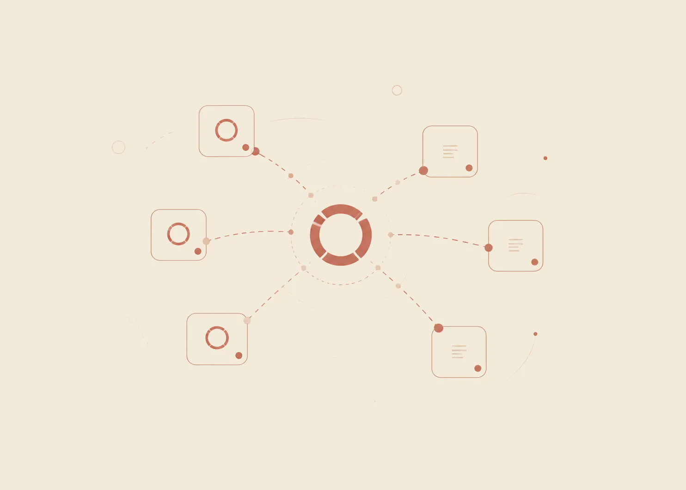
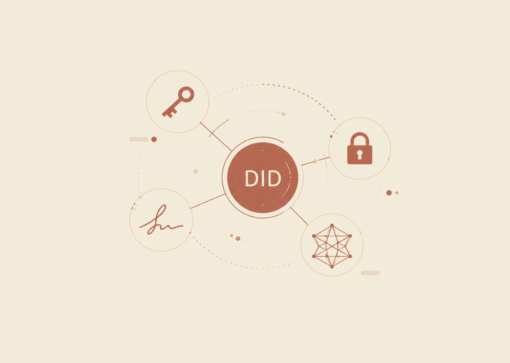
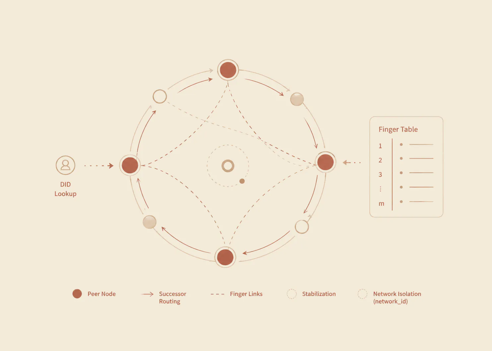
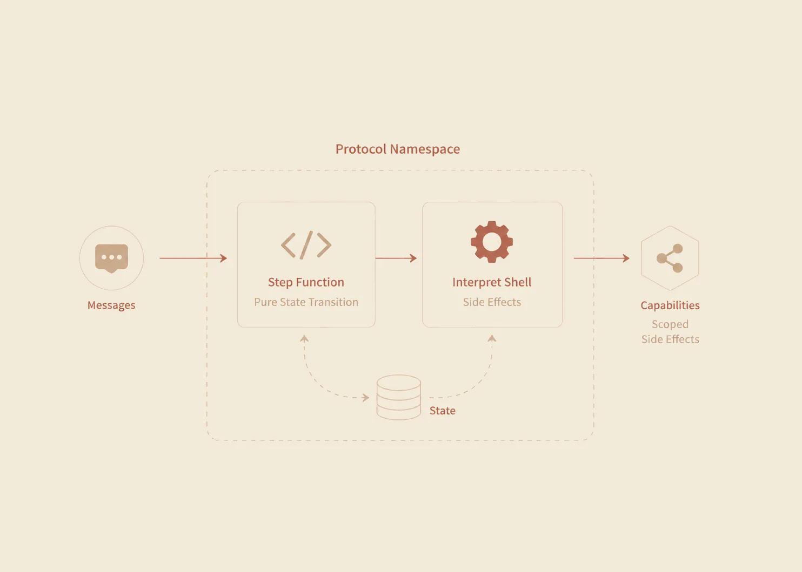

Rings Network
A P2P network for the sovereign age.
Rings is a decentralized, browser-native peer-to-peer and Sphinx onion network. Browser tabs and native daemons join a unified Chord DHT overlay, authenticate by DID, communicate over direct WebRTC datachannels or multi-hop Onion TURN circuits with zero central data storage, and route TCP, UDP, HTTPS, and composable invoke traffic through multi-hop onion loops.
Features
One network layer across browser and native peers.

Browser-native peers and TURN
Rings runs natively inside browser tabs via WebAssembly and web_sys, and on Linux, macOS, and Windows hosts via the same Rust node stack. Direct WebRTC datachannels carry peer traffic across UDP and TCP TURN traversal, including stateless signature-authenticated TURN and multi-hop Onion TURN over onion::udp.

DID identity and cryptography
Rings authenticates peers using decentralized identifiers backed by 6 signature schemes—secp256k1, EIP-191, BIP-137, secp256r1, Ed25519, and BLS12-381—bridging WebCrypto P-256, MetaMask, Phantom, C FFI signers, and JSON-RPC daemons with IndexedDB store persistence.

Structured peer routing
Rings organizes peers on a range-proved Chord DHT ring with O(log N) finger-table convergence, non-transitive gap-bridge routing, voluntary Leave handoffs, authenticated CRDT data topics, and network_id isolation across independent overlays.

Protocol and onion runtime
Rings isolates protocols in pure state machines executed by a capability-scoped interpreter shell over a decoupled multi-step transport and LZ4-compressed binary wire protocol, alongside Sphinx/AEZ onion loops serving TCP, UDP, HTTPS, and Kleisli invoke pipelines.
Architecture
Applications over protocols, Sphinx onion privacy, Chord, decoupled transport, and DID.
Rings unifies 7 decentralized layers across 18 workspace crates: user applications, namespaced protocols, pure runtime state machines, Sphinx/AEZ onion loops and gateways, Chord DHT routing, decoupled WebRTC/TURN/custom transport with LZ4 wire framing, and DID cryptographic identity.
Built-in operator and developer tooling includes the rings-tui interactive terminal dashboard, rings-turn and rings-turn-service decentralized TURN servers, selective IPv4/TCP TUN gateway, authoritative <did>.<zone> DNS relay, stateless DID mail gateway, one-line install.sh deployment, C/Python/Swift/Kotlin FFI bindings, and the browser node console plus Chrome MV3 extension with Onion WebView and IndexedDB persistence.